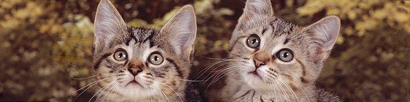
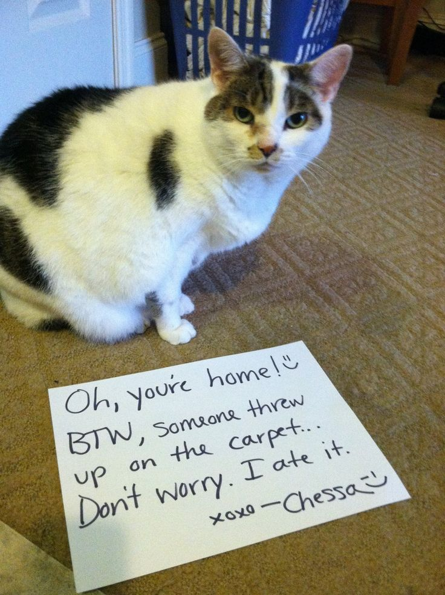
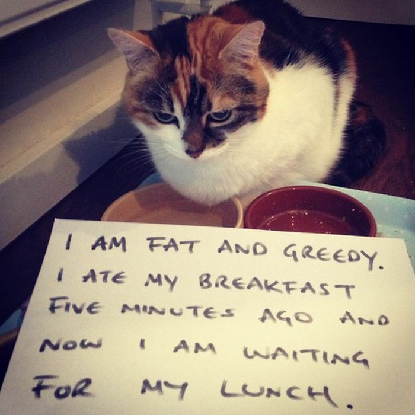
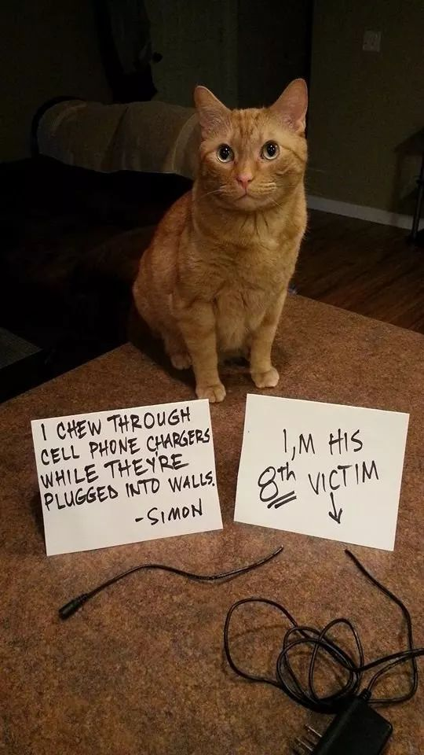
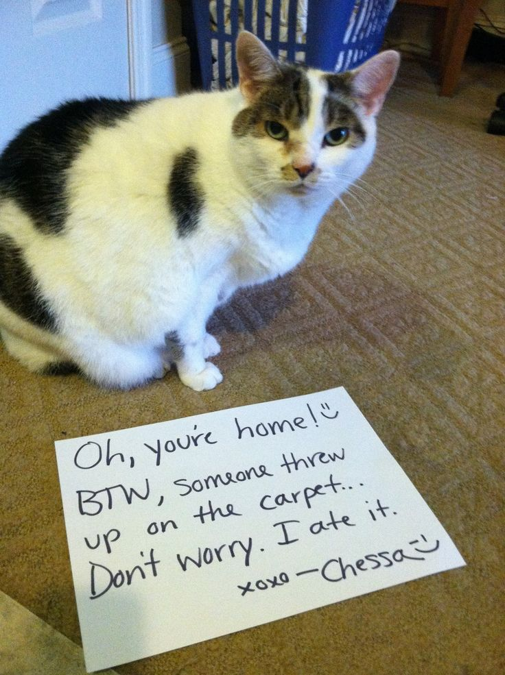
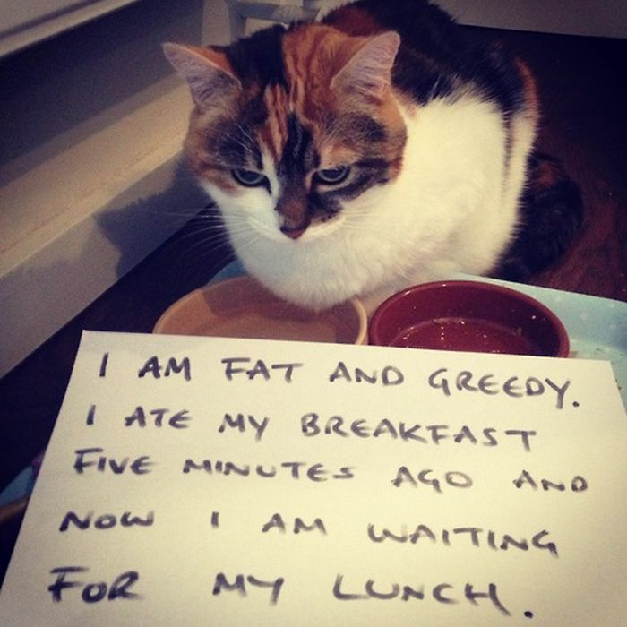
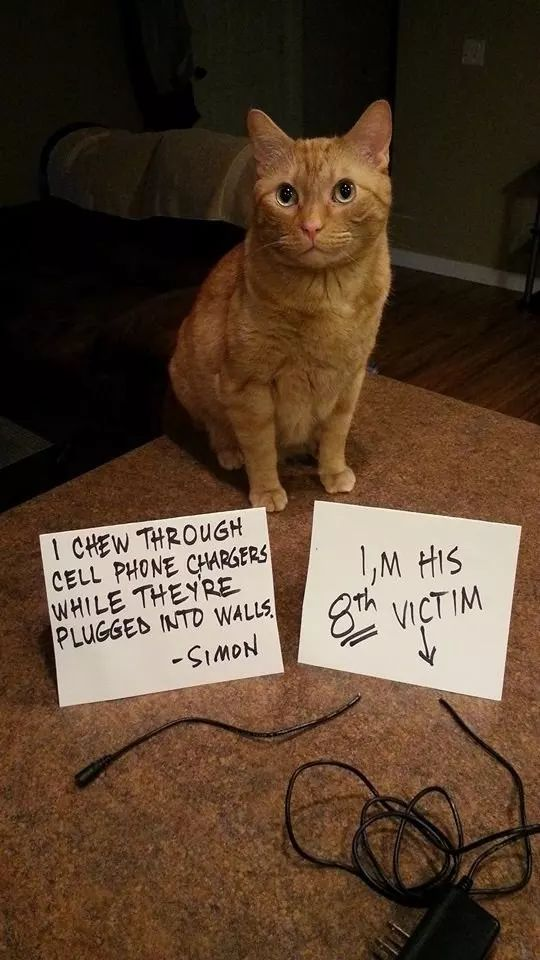

Cat Lover's Retreat
Come down to Exeter Cathedral for a paw-some group meetup every fortnite! Details on Meetup page

At Cat Lover Retreat, we're passionate about all things feline! Whether you're a devoted cat parent, a seasoned cat enthusiast, or simply someone who adores these creatures, you've come to the right place.
Explore the diverse world of cat breeds.
🐈Click the Cats for more!🐈
-
Bengal
Bengal cats are beautiful, wild-looking, and smart cats. This hybrid cat breed is growing in popularity due to their pattern and personality, and they stay about the same size as a large domestic house cat.
-
Sphynx
The Sphynx cat also known as the Canadian Sphynx, is a breed of cat known for its lack of fur. Hairlessness in cats is a naturally occurring genetic mutation, and the Sphynx was developed through selective breeding of these animals, starting in the 1960s.
-
Tabby
Tabby cats are one of the most common and recognizable cat coat patterns. Their distinctive markings can vary widely, but typically include stripes, swirls, spots, or a combination of these elements.
-
Ragdoll
The Ragdoll cat is a large, affectionate, and gentle breed known for its striking blue eyes, silky semi-long fur, and docile temperament. A beloved breed cherished for its affectionate nature, stunning appearance, and calm disposition, making it a popular choice for cat lovers seeking a gentle and loyal companion
-
Siamese
The Siamese cat epitomizes elegance, intelligence, and affection, making it a beloved companion for cat enthusiasts worldwide. With their sleek appearance, vocal nature, and loving personality, Siamese cats continue to captivate hearts and homes around the globe.
-
Fluffy Maine Coon
The Maine Coon cat embodies a majestic combination of size, beauty, and affection. With their fluffy coat, friendly demeanor, and intelligence, Maine Coons make cherished companions for cat lovers seeking a loyal and affectionate feline friend .
Learn about each breed's unique characteristics.
🐈Click the Cats for more!🐈
-
Temperament
Understanding and respecting a cat's temperament is essential for building a strong bond and providing appropriate care and enrichment. Each cat is unique, so it's essential to observe and appreciate their individual personalities and preferences.
-
History
Throughout history, cats have captivated human imagination with their grace, independence, and mysterious allure. From ancient guardians to modern-day lap warmers, cats have left an indelible mark on human society and continue to be beloved members of countless households worldwide.
-
Personality
Understanding and respecting a cat's personality is essential for building a strong bond and providing appropriate care and enrichment. Each cat is unique, so it's essential to observe and appreciate their individual personalities and preferences.
-
Health
By prioritizing these aspects of cat health, you can help ensure that your feline companion enjoys a long, happy, and healthy life by your side. Regular veterinary care, a nutritious diet, plenty of exercise, and a loving home environment are the cornerstones of cat health and well-being.
-
Zodiac
The association between cats and the zodiac is often based on astrological beliefs and symbolism.These associations between cats and the zodiac are often based on symbolic connections rather than concrete astrological principles. However, they provide an interesting perspective on the unique characteristics and behaviors of cats within the context of astrology.
Cat Tips: Help you get the best care possible.
🐈Click the Cats for more!🐈
-
Nutrition to Grooming
By prioritizing proper nutrition and grooming, you can help ensure that your cat maintains optimal health and well-being throughout their life. Regular veterinary check-ups, preventive care, and attention to your cat's individual needs are essential for promoting a happy and healthy lifestyle.
-
Behaviour to Health
By observing and understanding your cat's behavior, you can identify potential health problems early and take appropriate action to ensure their well-being. Regular veterinary check-ups, preventive care, and open communication with your veterinarian are essential for maintaining your cat's health and happiness.
-
Comprehensive Guides and Articles
By consulting comprehensive guides and articles on cats, pet owners can access valuable information to ensure the health, happiness, and longevity of their feline companions. These resources serve as essential tools for navigating the complexities of cat care and fostering a strong bond with your beloved pet.
🐈Cat looks fur-ious after being chiselled out of a wall🐈
A cat that was chiselled out from between two walls by firefighters appeared more angered than relieved after its rescue.
🐈Cambridge hospital cat Henry comforts girl with brain tumour🐈
Amber O'Gorman made it her "mission" to track down Henry in Addenbrooke's Hospital after her brain surgery
🐈Warning as man attempts cat rescue at substation🐈
A man who tried to rescue his cat from the roof of an electricity substation has been rebuked by a power company.
Weekly Cat Trivia!
What is the term for a female cat?
A molly!
What breed of cat is known for its lack of a tail?
Manx Cat
Which ancient civilization worshipped cats as sacred animals?
Ancient Egypt
What is the largest domestic cat breed?
Maine Coon
What is the name of the fictional cat in Lewis Carroll's "Alice's Adventures in Wonderland"?
The Cheshire Cat
Weekly Cat Trivia!
How many bones do cats have - 30, 130 or 230?
A molly!
What is the correct term for kittens?
A kindle
How many whiskers does a cat have?
24
In what year did the first cat go to space?
1963
In which state was the cat "Mayor Stubbs" a mayor of a town?
Alaska

Featured Club Cat Captions!
 





Join our Cat Lover's Retreat Community!
Sign up to our newsletter for the latest cat news, events, and exclusive offers!